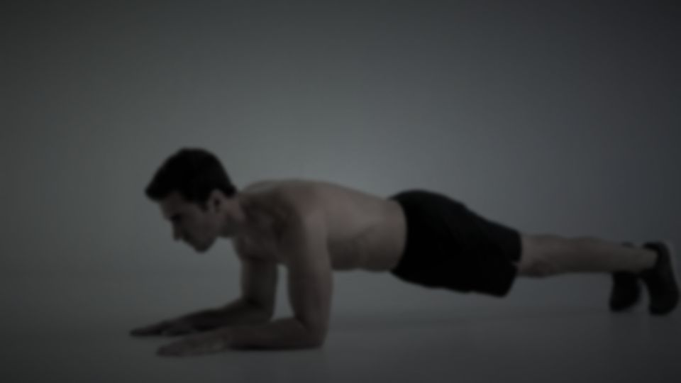

Plank Variations for Beginners: 8 Moves, Easiest First
Eight plank variations for beginners, from the counter plank to the side plank and shoulder taps, with an easier version, form cues and a 3-day plan.


TL;DR
- Planks train your trunk to stay still while something tries to move it: forward (front planks), sideways (side planks) or into a twist (taps and leg lifts).
- Start with an incline plank on a counter or a knee plank. Move on when you can hold three steady 20- to 30-second sets.
- Pick one variation from each group, not all eight. Three moves, two or three days a week, is plenty.
- Make a plank harder by changing the position, not by holding it longer. In a small lab study, a longer reach and a glute squeeze lit up the abs more than a normal plank.
- Stop if anything hurts (back, shoulders, wrists) and check with a doctor if you're pregnant, injured or haven't exercised in a long time.
You search "plank variations" and get a list of 30. Spider-Man planks. Plank jacks. Something with a stability ball you don't own.
You try number four. Your hips sag, your wrists complain, and 12 seconds later you're on the floor scrolling for number five.
The problem isn't you. Most lists are built for people who can already hold a plank. You need the other half: the versions that meet you where you are, in an order that makes sense.
Here are eight plank variations for beginners, easiest first, sorted by what each one trains. Pick one from each group, do them three days a week, and you'll have a better core routine than the 30-move list could give you.
The best plank variations for beginners, in one table
A plank isn't really an ab exercise. It's a "don't move" exercise. Your trunk muscles work to stop gravity from bending you, and each variation changes which direction gravity pulls. That's why the list below is split into groups instead of ranked as one long ladder.
| Group | Start here | Then | Move on when |
|---|---|---|---|
| Front (stops your back sagging) | 1. Incline plank on a counter | 2. Knee plank, then a full forearm plank | 3 steady holds of 20–30 seconds |
| Floor option (wrist- or back-friendly) | 3. Dead bug, arms only | Dead bug, arms and legs | 3 sets of 8 slow reps per side, low back still on the floor |
| Side (stops you bending sideways) | 4. Knee side plank | 5. Side plank from the feet | 3 steady holds of 15–20 seconds per side |
| Anti-twist (stops your hips rocking) | 6. Shoulder taps from the knees or a counter | 7. Plank leg lifts | 3 sets of 8 slow reps per side, hips level |
| Harder, not longer | 8. Glute-squeeze plank with a longer reach | Use it once a 45-second forearm plank feels easy | |
The "move on when" numbers are a starting rule, not a test. If you're shaking apart at 10 seconds, 10 seconds is your number. For how long each hold should be as you get stronger, see How Long Should You Hold a Plank?
Front planks: the foundation
Every other variation borrows the same line, so get this one right first.
1. Incline plank (counter or table)
Forearms on a kitchen counter or a sturdy table, elbows under your shoulders. Walk your feet back until your body is one straight line from head to heels, leaning in. Squeeze your glutes lightly and breathe.
- Easier: use a wall, or stand closer.
- Harder: a lower surface, like a coffee table or a stair.
2. Knee plank, then forearm plank
On the floor: forearms down, elbows under shoulders, knees down and a little behind your hips. Make a straight line from head to knees. This is the version Mayo Clinic's beginner plank video starts from. When three steady holds feel solid, lift your knees and do the same thing from your toes.
Form cues for every front plank:
- Push the floor away so your upper back doesn't sink between your shoulder blades.
- Eyes on the floor just in front of your hands, neck long.
- Hips level with your shoulders. Sagging hips put the load on your low back; hips in the air take it off your abs.
- The set ends when the line breaks, not when the timer says so.

Dead bug: the plank you do lying down
If a plank hurts your wrists, shoulders or low back, the dead bug trains the same "don't let your back arch" job from the floor. It's also a good warm-up before any plank.
3. Dead bug
Lie on your back, arms pointing at the ceiling, knees bent at 90 degrees over your hips. Gently press your low back into the floor. Slowly lower one arm behind your head and the opposite leg toward the floor, only as far as your low back stays down. Return, switch sides.
- Easier: keep your feet on the floor and move only your arms, or tap one heel down at a time.
- Harder: straighten the leg further and move slower, three seconds out and three back.
The floor is your coach here. If your back lifts off it, you went too far.
Side planks: the one most beginners skip
Side planks train the muscles along the side of your trunk, which front planks barely ask for. The side bridge is one of the three exercises spine researcher Stuart McGill studied as a back-friendly core staple, alongside the curl-up and bird dog. That study was small (eight healthy young men, measuring muscle activity and spine motion), so take it as a good reason to include side planks, not proof that they fix anything.
4. Knee side plank
Lie on your side, elbow directly under your shoulder, knees bent so your feet are behind you. Lift your hips until there's a straight line from your head to your knees. Don't let your top shoulder roll forward.
- Easier: shorter holds of 5 to 10 seconds, or do it standing with your forearm on a wall.
- Harder: move to the next one.
5. Side plank from the feet
Same setup, legs straight, feet stacked or one in front of the other (staggered is easier to balance). Lift your hips and hold. Many people find one side much weaker. That's normal, and it's a good reason to always do both.
Anti-twist planks: shoulder taps and leg lifts
Lift one hand or one foot and your plank wants to rotate. Stopping that is the whole exercise, so slower is better.
6. Shoulder taps
Start in a high plank (hands under shoulders, arms straight) from your knees or with your hands on a counter. Lift one hand, tap the opposite shoulder, put it down, switch. Your hips should barely move.
- Easier: wider feet, or slide the hand instead of lifting it.
- Harder: from your toes, feet closer together, a one-second pause on each tap.
7. Plank leg lifts
From a forearm plank, lift one foot an inch or two, hold for two seconds, lower it, switch. Keep the lift small. Kicking the leg high just arches your back.
- Easier: do it from an incline plank on a counter.
- Harder: hold each lift for five seconds.
How to make a plank harder without holding it longer
Once a normal forearm plank is easy for 45 seconds or so, adding time mostly adds boredom. Change the position instead.
8. Glute-squeeze plank with a longer reach
Set up a forearm plank, then place your elbows a few inches further forward than your shoulders. Squeeze your glutes hard and tuck your tailbone slightly, as if you're flattening your low back. Brace like someone's about to poke your stomach. Hold 10 seconds, rest, repeat.
In a 2014 lab study, 19 people held four plank versions for 30 seconds each while sensors measured muscle activity. The version with elbows further forward plus a pelvic tuck activated the upper abs, lower abs and obliques significantly more than a standard plank, and the longer reach did most of the work. That was one session of muscle activity readings, not a training study, so it shows the move is harder, not that it builds more strength over time.
- Easier: do just the glute squeeze, elbows in the normal spot.
- Stop if: you feel it in your low back rather than your stomach.
A 10-minute plank routine, three days a week
The U.S. Physical Activity Guidelines recommend muscle-strengthening activity at least two days a week. This fits on three non-consecutive days, like Monday, Wednesday and Friday. Pick your current level in each group.
| Move | Sets | Each set | Rest |
|---|---|---|---|
| Dead bug (warm-up) | 1 | 6 slow reps per side | 30 seconds |
| Your front plank (1, 2 or 8) | 3 | 10–30 seconds, good form | 30–60 seconds |
| Your side plank (4 or 5) | 2–3 per side | 10–20 seconds | 30 seconds |
| Your anti-twist move (6 or 7) | 2 | 6–8 slow reps per side | 45 seconds |
Every week or two, try to add a few seconds or a rep. When you hit the "move on when" number, take the next step and drop your time back down. If you'd rather fit a plank into the day than a session, a single 20-second hold also works as an exercise snack. For how planks fit into a full routine with squats and push-ups, see Bodyweight Strength Training at Home.
Safety notes
- Planks should feel like hard work in your stomach, sides and shoulders. Sharp or pinching pain anywhere, especially your low back, means stop.
- Wrists sore in a high plank? Drop to your forearms, or do the move on a counter.
- Breathe the whole time; don't hold your breath to get through a hold. If you have a heart condition or high blood pressure, ask your doctor before starting.
- Pregnant, recently postpartum, recovering from an injury or surgery, or new to exercise after a long break: check with a doctor or physical therapist first.
Questions people ask
What is the easiest plank variation for beginners?
A wall or counter plank. Your body leans in at an angle, so your trunk holds less of your weight. From there, go to a knee plank, then a full forearm plank.
Do plank variations work your abs?
Yes, and more. Front planks work the muscles down the front of your stomach, side planks work the sides, and both use your shoulders, hips and glutes to hold the line. Don't expect planks to change how your stomach looks; that's not what they're for. They make your trunk better at staying steady.
How many plank variations should I do?
Three is plenty: one front, one side, one anti-twist. Doing them well beats rotating through a dozen you can't hold.
Turn a scroll into a plank
The hard part of any core routine isn't the plank. It's the 10 minutes you were going to spend on your phone instead.
Rep Rot locks the apps you lose hours to until you get up and move. Set a daily limit, and when you hit it, those apps lock until you do a set: a plank, or squats, push-ups, sit-ups or pull-ups, checked by your iPhone's front camera right on the phone. Nothing is recorded or uploaded. Use a standard front plank for that set; the variations above are for your routine.

It watches the set; it doesn't coach your form, so the cues above are still on you. And like any Screen Time limit, it can be worked around by someone determined. What it changes is the default. Don't rot. Rep instead. Rep Rot has a free plan and a 7-day Pro trial, and it's in testing now: email help@reprotapp.com for early access.
Sources: Schoenfeld BJ, Contreras B, Tiryaki-Sonmez G, Willardson JM, Fontana F, "An electromyographic comparison of a modified version of the plank with a long lever and posterior tilt versus the traditional plank exercise", Sports Biomechanics (2014); McGill SM, Karpowicz A, "Exercises for spine stabilization: motion/motor patterns, stability progressions, and clinical technique", Archives of Physical Medicine and Rehabilitation (2009); Mayo Clinic, Want to strengthen your abs? Try a plank (knees and forearms, elbows under shoulders); Mayo Clinic, Turn a plank to challenge your core (side plank); Physical Activity Guidelines for Americans, 2nd edition (2018).